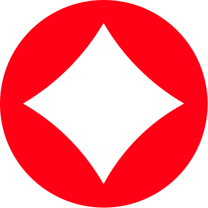

The meaning layer for humans and machines
Orient makes meaning from the work people and AI tools create — turning documents, meetings, research, questions, framed communications, and outputs into trusted answers, evidence, memory, and machine-ready context.
So people and agents can act from the same understanding.
Understand, decide, explain and remember what matters.
Structured meaning, evidence and constraints agents can act on.
Orient has two customers of meaning. Humans use it to think and communicate. Agents use it to act.
One shared meaning — both sides read from it, and write back to it.
Turn what a team knows and thinks into meaning that holds.
Bring anything in — documents, links, meetings, research, raw thought — and move from uncertainty to a defensible answer you can stand behind and share.
See Orient for HumansThe structured meaning agents need to act.
Agents don't need a pile of documents. They need to know what is true, uncertain, supported, contradicted, stale — and what they're allowed to say. Orient gives them that.
See Orient for MachinesMeaning you can point to.
Orient turns work into meaning objects.
Every document, question, meeting, frame and conversation becomes structured understanding — the same objects people trust and agents can act on.
Making the work was never the hard part. Trusting it is.

Work from the same understanding.
Orient is the meaning layer beneath your team and its agents — one resolved source of what's true, decided and safe to act on. Join the waitlist for early access.